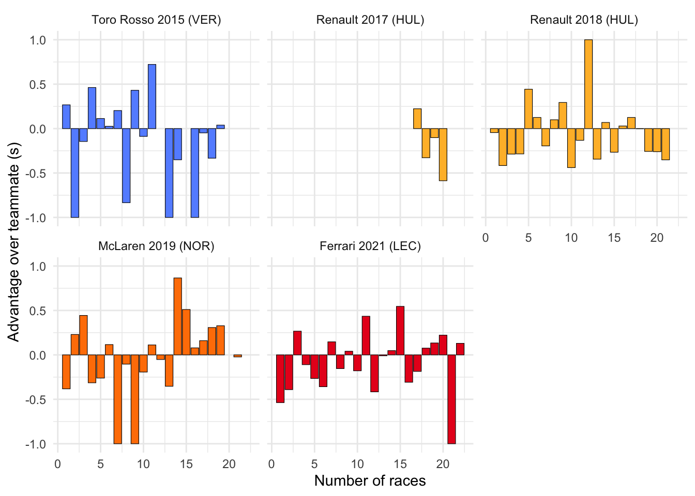

Code
library(tidyverse)
library(forcats)
colours <- tribble(
~constructorName, ~colour,
"Ferrari", "#e80220",
"McLaren", "#ff8001",
"Renault", "#ffbb33",
"Toro Rosso", "#6592ff",
"williams", "#63c4ff"
)
comparisons <- tribble(
~label, ~year, ~from.round, ~driverRef, ~constructorRef,
"Toro Rosso 2015 (VER)", 2015, 1, "max_verstappen", "toro_rosso",
"Renault 2017 (HUL)", 2017, 17, "hulkenberg", "renault",
"Renault 2018 (HUL)", 2018, 1, "hulkenberg", "renault",
"McLaren 2019 (NOR)", 2019, 1, "norris", "mclaren",
"Ferrari 2021 (LEC)", 2021, 1, "leclerc", "ferrari"
)
sainz <- comparisons |> mutate(driverRef = "sainz")
drivers <- read_csv("data/drivers.csv", show_col_types = FALSE) |> select(driverId, driverRef, code)
constructors <- read_csv("data/constructors.csv", show_col_types = FALSE) |>
select(constructorId, constructorRef, name) |>
rename(constructorName = name)
qualis <- read_csv("data/qualifying.csv", show_col_types = FALSE) |> select(qualifyId, raceId, driverId, constructorId, q1, q2, q3)
races <- read_csv("data/races.csv", show_col_types = FALSE) |>
select(raceId, year, round, name) |>
rename(raceName = name)
parse_duration <- function(dur) {
parts <- strsplit(dur, "[:\\.]")[[1]]
as.numeric(parts[1]) * 60 + as.numeric(parts[2]) + as.numeric(parts[3]) / 1000
}
df <- bind_rows(
sainz,
comparisons
) |>
merge(drivers) |>
merge(constructors) |>
merge(races) |>
merge(qualis) |>
filter(round >= from.round & round < from.round + 30) |>
select(label, code, constructorName, year, round, raceName, q1, q2, q3) |>
pivot_longer(c(q1, q2, q3), names_to = "qualiSession", values_to = "laptime") |>
rowwise() |>
mutate(laptime = if_else(laptime == "\\N", NA, parse_duration(laptime))) |>
ungroup()
quali.diffs <- df |>
mutate(driver = if_else(code == "SAI", "Sainz", "Teammate")) |>
pivot_wider(id_cols = c(label, constructorName, year, round, raceName, qualiSession), names_from = driver, values_from = laptime) |>
mutate(advantage.sec = Teammate - Sainz, advantage.pc = 100 * (Teammate - Sainz) / Teammate) |>
filter(!is.na(advantage.sec)) |>
group_by(year, round) |>
filter(qualiSession == max(qualiSession)) |>
arrange(year, round)
ggplot(quali.diffs) +
aes(x = round, y = advantage.sec, group = constructorName, fill = constructorName) +
geom_col(colour = "black", linewidth = 0.2) +
scale_fill_manual(values = colours$colour) +
facet_wrap(~ fct_reorder(label, year)) +
scale_y_continuous(limits = c(-1.0, 1.0), oob = scales::squish) +
labs(
x = "Number of races",
y = "Advantage over teammate (s)"
) +
guides(fill = "none") +
theme_minimal()
